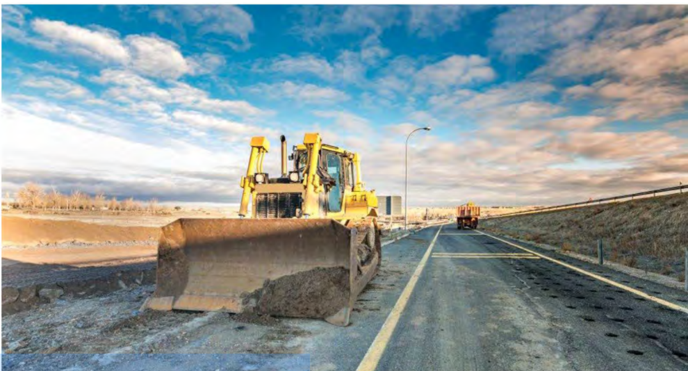
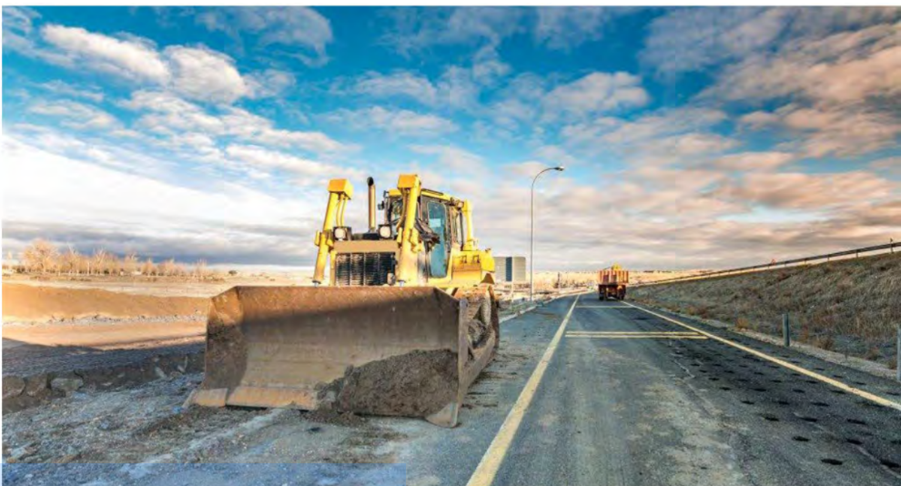
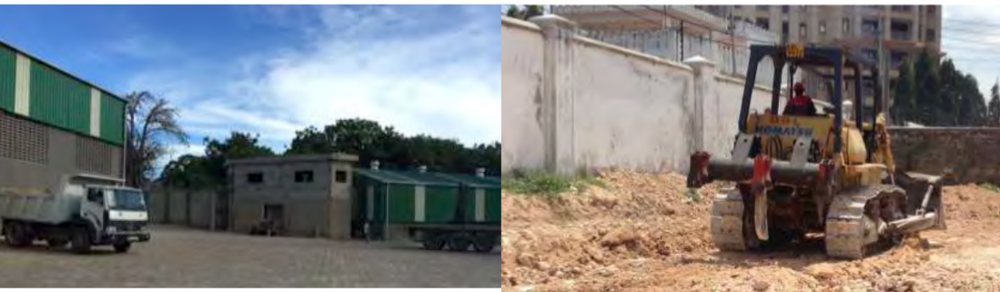

construction search
Welcome to Flojumavic Ent Allied Merchants

Welcome to Flojumavic Ent Allied Merchants
About Flojumavic Ent Allied Merchants
Since its inception, Flojumavic Ent Allied Merchants has evolved into a specialized and respected provider of construction projects to various entities. Over the years, we have solidified our position as one of the most respected general contracting firms in Kenya. With a track record of success, we have demonstrated our capability to undertake large, complex projects in the commercial and institutional sectors.
OUR APPROACH
TO PROJECTS
We continuously aim to improve the delivery of projects through the incorporation
of lessons learned and the application of robust systems and process.
- Maintain core team of resources.
- Structure project team around project and client needs.
- Supplement resources with selected skilled resources.
- Focus on Project, Engineering and Construction Project Management (supported by sound engineering experience and qualifications).
- Capital, Cost Saving and Business Improvement.
Flojumavic Ent Allied Merchants is dedicated to exceeding our clients' expectations by delivering exceptional construction solutions with integrity, professionalism, and excellence.
Employement
In Flojumavic Ent Allied Merchants we actually hire our employees who meet a certain qualification so in you are interest in workin with us bellow is a form you can fill and get employeed if you meet our terms and conditions."GOOD LUCK"
Fill out the form below if you want employement and state your role:
Our Services
Explore our range of services tailored to meet your construction needs:
- Road & Highway Construction Site clearance, sub-base/base formation, soil- stabilization, asphaltic concrete laying and surface dressing, AC overlays, bridges and box culverts, storm drainage systems.
- Yard Construction Natural gravel or Graded crushed stone bases, Fibre Reinforced Concrete and RCC hardstanding areas, Paving block surface (Cabro), Asphaltic concrete surface.
- Building Construction Hotel/apartment complex, warehouses, housing developments and private homes, perimeter walls, etc.
- Slope Protection Stone pitching, Gabions, Geotextiles, Retaining walls.
- Pre-Cast Concrete Products Spun concrete culverts, concrete building blocks of various sizes, concrete paving blocks, road kerbs, road channels, slabs and various other pre-cast units.
Equipment and Machinery:
In Flojumavic Ent Allied Merchants we have mostly all the machinerys used in any constructions.For the few that we don't have we can hire for you through our most trustable client FAMIO HEAVY Construction EQUIPMENT
Accounting
Contact Us
Fill out the form below to get in touch with us:
Recent Projects
Check out some of our recent successful projects.
Road & Highway Construction: QUANTITY SURVEYING • Road building is one of the major sectors the company operates in. With over 7years experience in building and maintaining roads, from simple gravelling on country roads to class A roads with high traffic counts. The company has experience with the numerous complexities of highway construction, and has successfully undertaken the design and construction of several types of pavements and wearing courses.
 

Yard Construction We are experienced in all types of yardconstruction and have completed; - 40,000 m3 in concreting hard-standing areas; - 1000+ acres of leveling and graveling yards - and Over 200 acres of Cabro (PCC Paving Block) Yards.
Building Construction: Yard Construction: •Flojumavic Ent Allied Merchants has a rich heritage in the Building sector with 4 hotel complexes built, several office buildings and boundary walls for the yards we have constructed.We operate pre-casting yards at 2 locations in support of our building and civil works. We currently manufacture 100mm/4” solid, 6” solid, 6” hollow, 200mm/8”solid, and 9” hollow blocks for use on our building and boundary walling jobs. As well as several precast units such as; kerbs, channels, spun culverts, bollards as well as paving blocks of various sizes on order.
IT IS EMPIRE DIGITAL’S GOAL TO ACHIEVE THE FOLLOWING:
• The correct scope is implemented to address the need and address
the project objectives.
• The client pays a fair price for the implemented scope.
• The product is delivered within the best possible time period to
optimise “time to market”.
• The product meets the user requirement specification and the
technical standards set by the professional team.
• A suitable integrated project team focusses on delivery of the
product.
• Project risks are continuously identified, assessed and managed.
• The client and stakeholders are suitably informed of progress.
• Documentation is managed and stored.
• Goods and services are procured to meet time, cost and quality
requirements.
• The above is integrated towards a successful project.
Quality Policy
Empire Digital Limited will make quality a way of life. Quality is the result of good management and will be achieved by the way we get the right things done. We believe there is always a better way to provide services to our clients and strive for continuous improvement. In rendering our services we will optimize resource utilization and commit ourselves fully to the task at hand. We consider meeting client requirements as the minimum performance criteria and aim to surpass expectations.
Policy
Flojumavic Ent Allied Merchants is committed to a clean, safe and healthy environment for our employees, contractors, customers and the communities around us. All employees and contractors forming part of the Empire Digital's service, have a duty to prevent harm to themselves, to others and to the environment.
Flojumavic Ent Allied Merchants will comply with all the applicable legislation, regulations and customers’ requirements as minimum benchmark for its Safety, Health and Environment (SHE) Policy. Empire Digital will regularly review this policy, practices and performance to ensure ongoing improvements.
Contact Us
Get in touch with us to discuss your next project.
0723751325
Flojumavic.yahoo.com